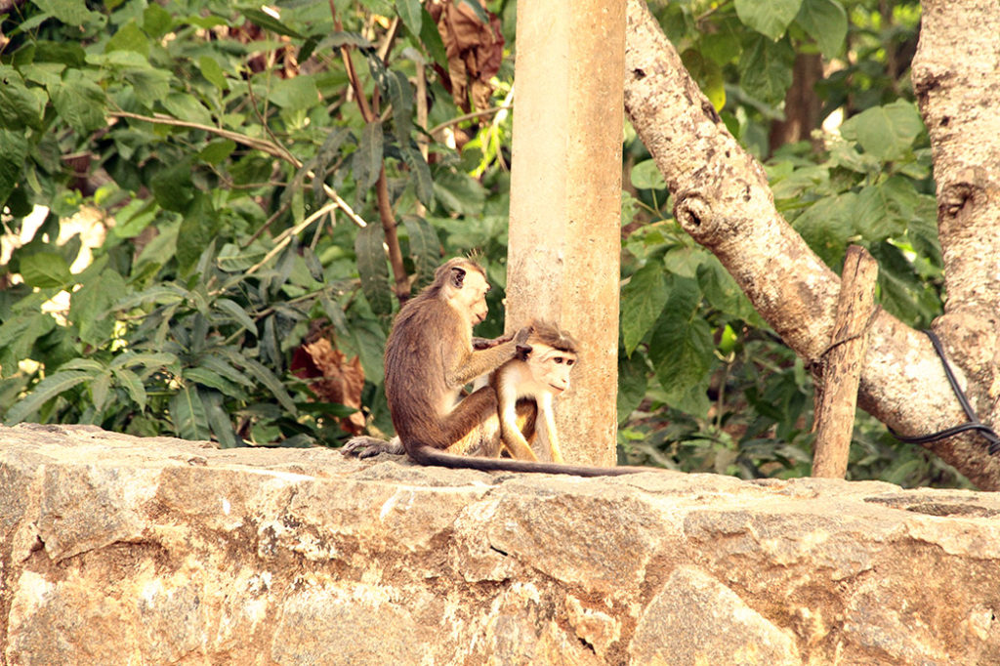
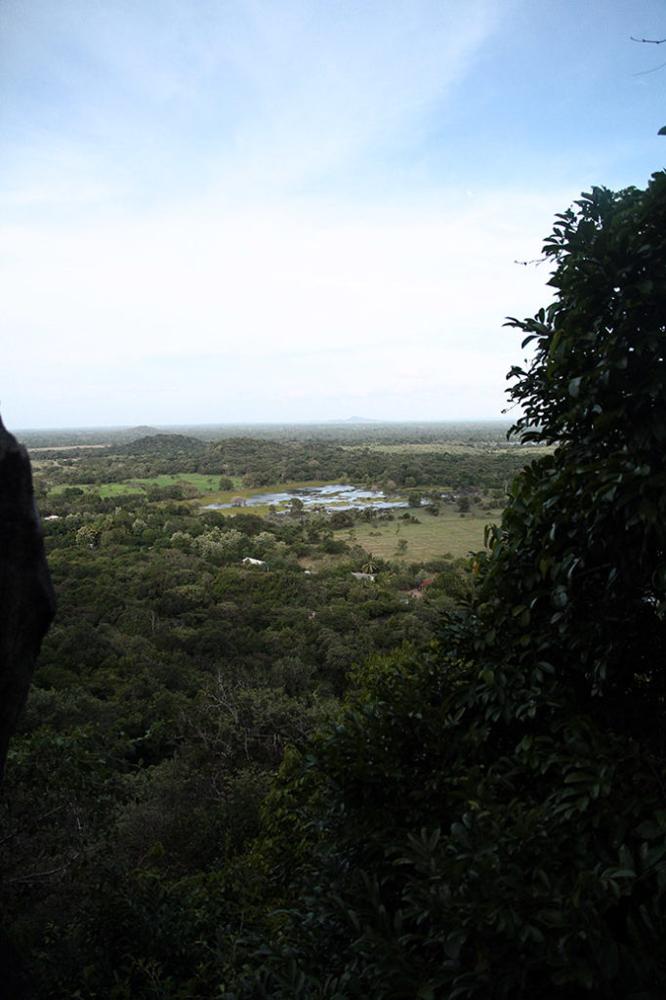
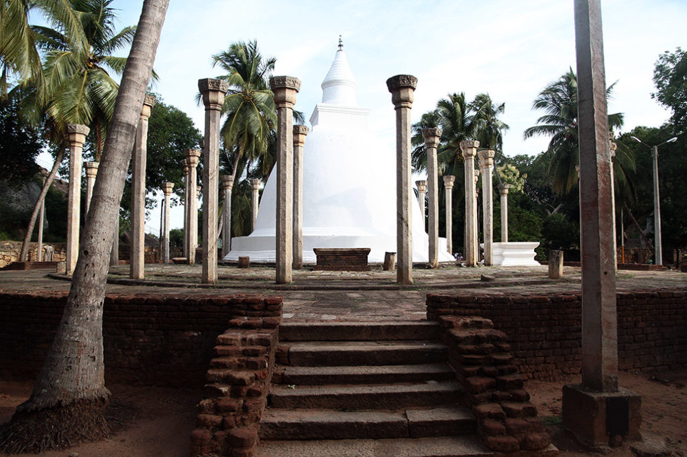
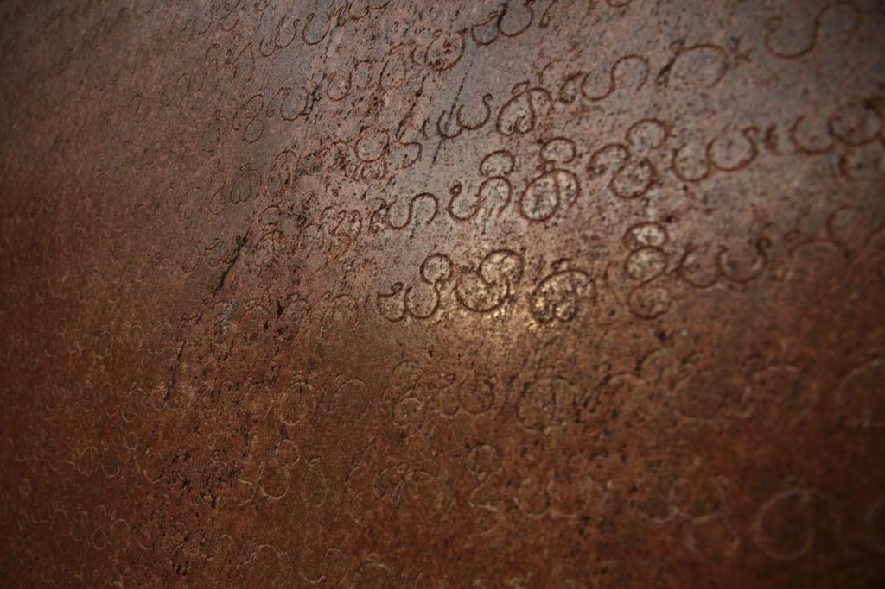

Sri Lanka / Anuradhapura
Après un petit déjeuner chaque jour plus impressionnant nous prenons le tuktuk de la guesthouse pour la gare.
Train jusqu’à Anuradhapura.
Nous trouvons une petite guest house avant de prendre un bus local suivi d’un tuk tuk pour aller profiter de cette fin de journée à Mihintale sur le temple situé non loin en haut de la colline.



